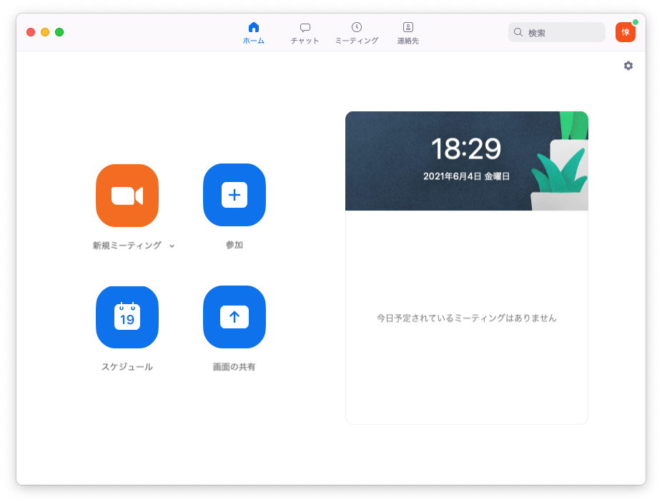
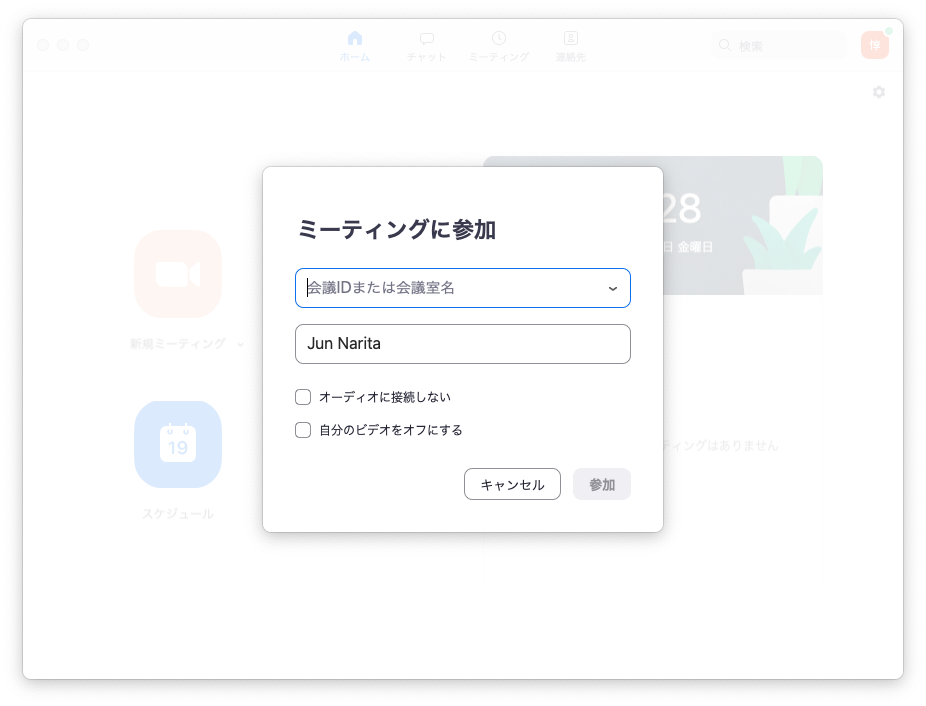
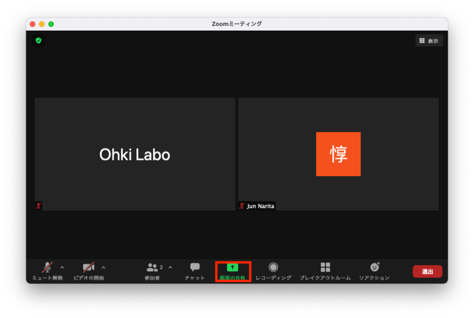
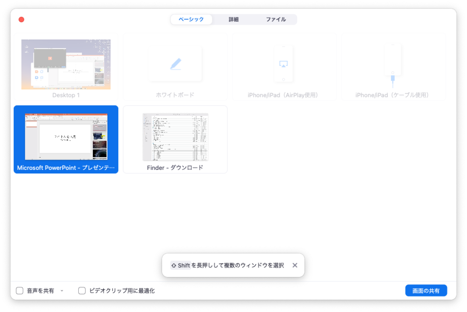
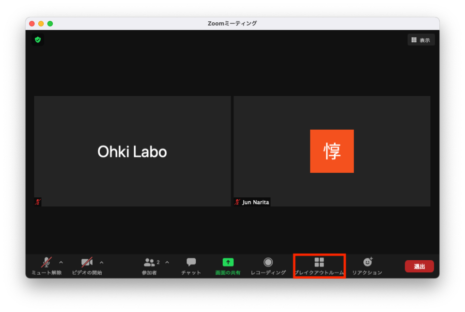
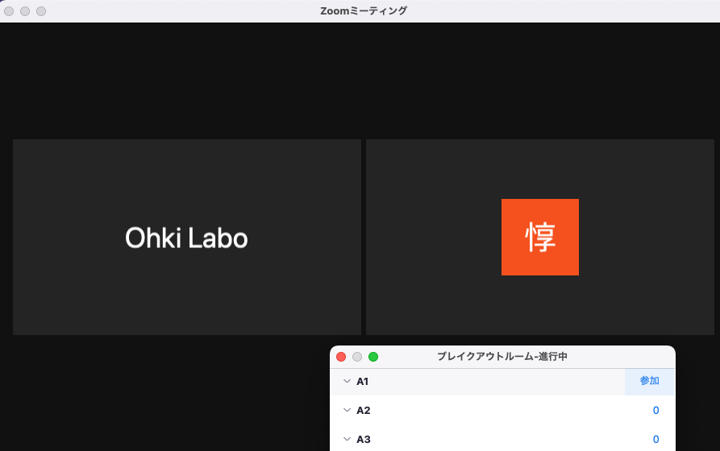
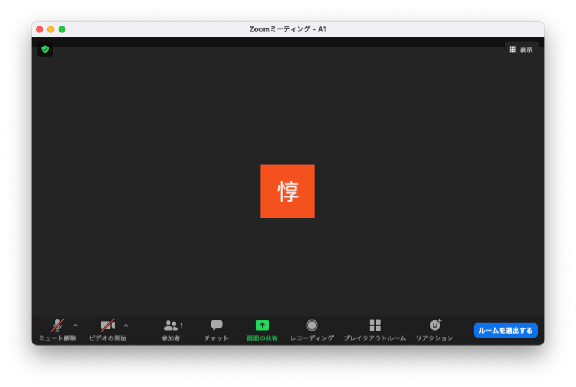
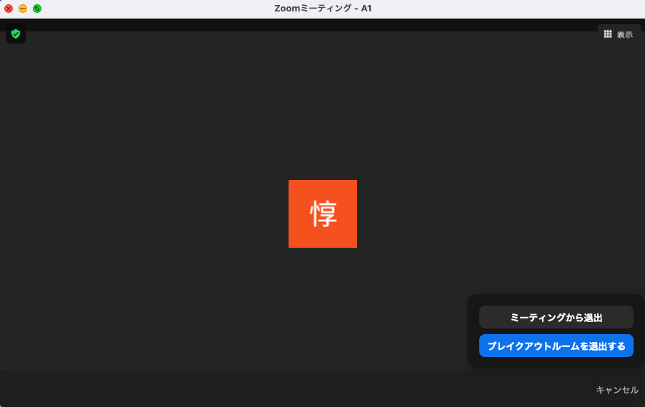

グループ発表会
Contents
グループ発表会#
グループ発表会#
Important
オンライン型での実施に向け，本ページの内容は変更される可能性があります．定期的に確認するようにしてください．
本年度のグループ発表会はZoom ( https://zoom.us/ ) を利用したオンライン発表会を実施します．
以下の情報を参考に準備を進めてください（準備にあたり不明な点などがあればSlackまで）．
スケジュールおよび会場#
スケジュールおよび会場（ZoomのURL等）は今年度の講義についてを参照してください．
資料と発表形式#
PowerPointで作成してください
通常のスライド形式，枚数は表紙を除いて10枚以内としてください（10枚を超える分は付録スライドとしてください）
10分程度で発表できるような構成を心がけてください．
各スライドには該当箇所を担当した人の名前を（目立つ場所に）記載しておいてください
図表やスクリーンショットを効果的に使用して見せる（読ませるのではない）スライドを意識してください
各実装における班員全員の性能差を示した上で，一番高性能な人の実装の工夫点を紹介してください
前処理にそこそこ時間を要す場合，前処理に要した時間も説明してください
これはどうかなという実装の場合，全体アーキテクチャや構造など明確に説明したうえで参考値として紹介してください
自由課題を実施した人はデモを録画した動画などを用意してもよいでしょう
実際のデモを動かすことも可ですが，オンライン発表ですのでその際は十分なリハーサルをして臨んでください
限られた時間で他グループと差別化を図った惹きつけるプレゼンを意識してください
他に気になることがあったら検討しますので早めに相談してください
発表資料の提出方法#
発表前日12:00までに発表資料を以下の場所にアップロードして下さい． 詳しい提出期限は今年度の講義についてを参照してください．
第二部の場合
\\fs.inf.in.shizuoka.ac.jp\share\submit\(実施年数)情報科学実験A\第2部発表会
第三部の場合
\\fs.inf.in.shizuoka.ac.jp\share\submit\(実施年数)情報科学実験A\第3部発表会
ファイル名：(実験名)-(部)-(部屋&班).pptx 例）CS実験A-Part2-A1.pptx
なお，提出はグループの代表者一人が行えばOKです． 代表者は提出が完了したかどうかをSlackで報告するなどして，提出状況をグループ内で共有するようにしてください．不明な点がある場合は，askにてお問い合わせ下さい．
他グループの資料確認#
グループ発表当日に資料確認の時間を設けていますが，その時間で全てのグループの資料を確認しきれないと思います． 発表を見に行くグループを決めるために，前日に他のグループの資料を各自確認しておくようにしてください．
Zoomアカウント作成および事前テスト#
オンライン発表にはトラブルがつきものです．Zoomについては以下既に皆さんも講義等で使ったことがあるかもしれませんが， ソフトウェアのインストールや，接続方法や音声・画面共有の確認などを行っておきましょう．またグループで相談して，Zoomを使った発表練習をあらかじめ行なっておいてください．
Zoomを使った発表の具体的な流れ#
会議に参加すると下記の画像のような画面となります（会議への参加方法は本ページ下部の「Zoomの利用方法」を参照してください）
発表者は開始時刻より前にあらかじめ自分の班番号が書かれたブレイクアウトルームへ移動してください（注1, 注10〜注12）
聴講者は開始時刻より前にアップロードされた資料に軽く目を通して，興味がありそうな発表を選んでおいてください（注2）．
開始時刻になったら聴講者は発表を聴きたいブレイクアウトルームに移動してください．
発表者は聴講者が来たら随時スライドの内容を説明してください（注3〜注5）．
説明が終わったら聴講者は質問を行ってください．マイクを使ってくれてもよいですし，チャット等で行ってくれても構いません（注6，注7）
聴講した人は，優れていると思った発表3件に投票を行なってください（自分たちの班には投票しないでください）（注8）．
前半後半で上記作業を繰り返します
最も得票数を集めた上位4件が第二部発表会の優秀班となります．優秀班は続いて全参加者に対して10分間のプレゼンを行なって頂きます（注9）．
最後に教員から講評を行って終了です
FAQ・諸注意#
（注1）前半，後半ごとに発表者は各班2名，それぞれ異なるメンバーを割り当ててください（発表者以外は聴講を行ってください）
（注2）全ての班の発表を聞く必要はありません．1班10分+α程度と想定して，5〜6班聴きたいものを選んでおいてください．
（注3）聴講者が何度も来た場合は繰り返し説明を行ってください（ポスター発表と同じ）．
（注4）聴講者が発表の途中から入ってくることがありますが，気にせず続けてください．聴講者は最初のほうが気になる場合，「最初の～ページまでを話してもらえますか？」とお願いしましょう．
（注5）発表者2名の分担はお任せします．画面共有をどちらがするかなど含めて，やりやすいやり方を事前テストで相談しておいてください．
（注6）発表者が話している時は，聴講者は「カメラ」「マイク」ともにOFFにしておいてください．質問時はマイクのみONにしても構いません．
（注7）質問者は自分の名前を名乗ってから質問するようにしてください．発表者は誰にどんな質問をされたかをメモしておいてください．その内容はレポートに「発表会で受けた質問」という項を作って記載しておいてください
（注8）前半の聴講者は前半が終わった時点で，後半の聴講者は後半が終わった段階で投票を行ってください
（注9）優秀発表者のプレゼンはメインルームにて行います．全ての人は時間になったらブレイクアウトルームを退出してメインルームに戻ってきてください．
（注10）班員が3名（1名欠席，もともと3名等）の場合は1名の発表者となるパートを他の2名がサポートするなどして，うまく分担してください（聴講時間が減りますが発表を優先してください）．
（注11）班員が2名となってしまった場合は前後半を1名ずつで担当してください．班員が5名の場合は前半か後半の発表者を3名としてください．
（注12）班員が1名しかいない場合は前後半のどちらか一方で発表を行ってください
事前テストでのチェック項目#
Zoomのインストール
接続のテスト
Zoomへのアクセス，可能であれば他の班員と協力してマイク等のテストを行なってください
発表のテスト
画面共有機能を使った発表のテストを行なってください
Zoomの利用方法#
簡単にZoomの使用方法を記載しておきます。こちらを参考に事前テストを行なってください。
アプリのインストール#
以下のURLからダウンロードしてください
ログインする#
2つの方法があります．
URLからログイン
会議IDとパスコードを使ってログイン
1. の場合はアプリがインストール済であればURLをクリックするだけで自動的にアプリが立ち上がり，会議に参加できます．
2. についてはアプリを起動した後，会議IDとパスコードを入力する必要があります．以下で詳しく手順を説明します．

アプリの起動画面です．「参加」ボタンを押してください．

会議IDを入力する画面になりますので，事前に配布された会議IDを入力してください．
会議ID入力後にパスコードの入力画面になりますので，パスコードを入力すれば会議への参加が完了します．
画面を共有する#
 画面を共有する時は下部メニューの「画面の共有」を選択してください。

選択すると、共有可能な画面のリストが出てきます。全画面や特定のアプリを対象とした画面共有が可能です。
当日のトラブルで最も多いのが画面共有のトラブルです。事前に必ず手順を確認しておくようにしましょう。
（補足）ブレイクアウトルームへの参加#
Caution
ブレイクアウトルームはホスト側が事前にルームを作成する必要があります．ブレイクアウトルームへの参加については事前テストを行わなくても大丈夫ですが，もしテストを行いたい場合は，ホストとなる人を1人用意して試してみてください．
 Zoom会議に入室すると上の画面になると思います。
下部メニューに「ブレイクアウトルーム」というアイコンがありますのでクリックしてください。

参加できるブレイクアウトルームの一覧が出てきますので、参加したいブレイクアウトルームの名前の右端にマウスを持っていってください。
右端にマウスを持っていくと「参加」の文字が出てきますのでクリックしてください（少しわかりにくいかもしれませんが、画像で「参加」と出ているあたりにマウスを持っていってください）

ブレイクアウトルームに参加した後の画面です。ブレイクアウトルームから退出したい時は右下の「ルームを退出する」のボタンを押してください。

「ルームを退出する」を押すと、選択肢として「ミーティングから退出する」と「ブレイクアウトルームを退出する」の2つが出てきます。
この時、基本的に 「ブレイクアウトルームを退出する」 を選択してください。
ミーティングから退出するを選択するとZoomが終了してしまいます。メインルームに戻る時や他のブレイクアウトルームに移動する場合は、必ず 「ブレイクアウトルームを退出する」 を選択する必要があります。